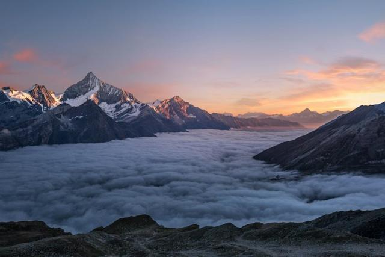

Progress shows real stages and real bytes, never invented percentages. Failed or cancelled AI work refunds its credits automatically. Nothing claims success before it has happened.
Empty Library
Nothing here yet. Your captures, imports and AI videos will collect here.
Open cameraImport
Camera access
MOVA needs the camera to take photos and video. Nothing is uploaded unless you choose an AI feature.
Allow camera
Photos access
Choose specific items or your whole library. You can change this anytime in Settings.
Select photosAllow all
Importing video
IMG_4021.MOV from iCloud
214 MB of 380 MB
Unsupported file
“clip.webm” can't be opened. Try MOV, MP4, HEIC, JPEG or DNG.
Choose another
Storage almost full
1.2 GB left ≈ 4 min of 4K24 Log. Switch to 1080p or free up space.
Use 1080pManage
Uploading media
Your photo is uploading for generation. Keep MOVA open on Wi-Fi.
3.1 MB of 10.4 MB
Processing reference
Finding shots · 3 foundReading camera movesLight, color & pacing
Generation queued
You're 3rd in line. We'll notify you when it starts and when it's ready.
Cancel · refund 36

Ready
Generation complete
“Golden hour walk” is ready to watch. Saved to Library as a draft.
Watch
Generation failed
The face in your photo was too small to animate. 36 credits returned.
Try a closer photoRetry
Generation cancelled
Stopped before rendering. 36 credits returned. Your settings are saved.
Start again
No internet
Camera and editing work offline. AI features will be ready when you reconnect.
Retry
Not enough credits
This needs 36 credits and you have 12. Shorter 6s version costs 18.
Get creditsMake 6s
Exporting
Desert drive · 4K · HEVC
Frame 368 of 576
Project saved
Saved project
A toast, never a modal. Auto-save runs after every edit.
Missing original media
Clip 3 in “Desert drive” was deleted from Photos. The rest of the project is fine.